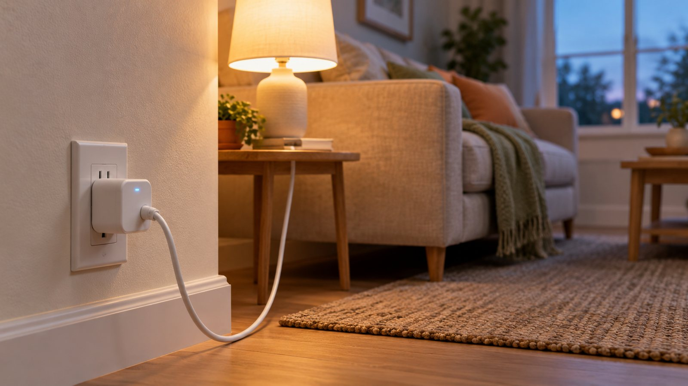
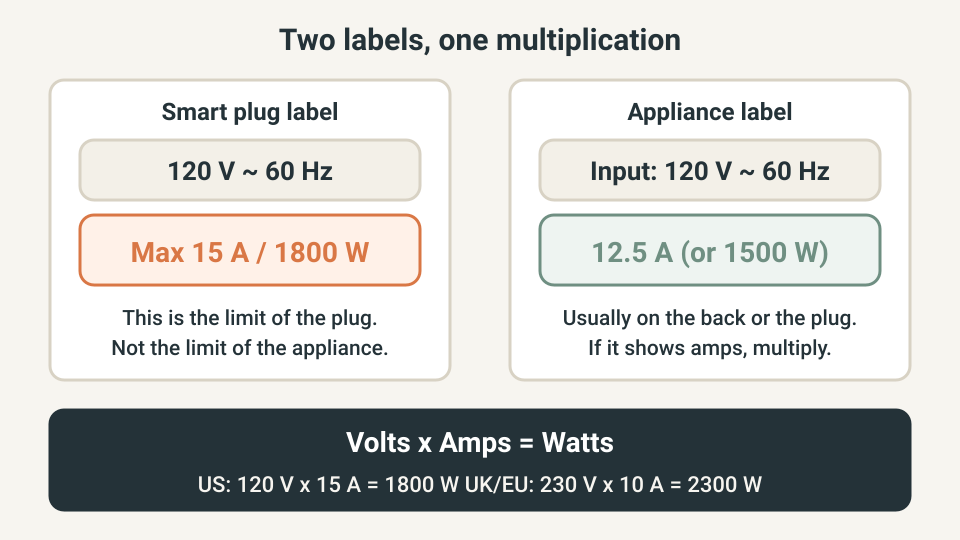
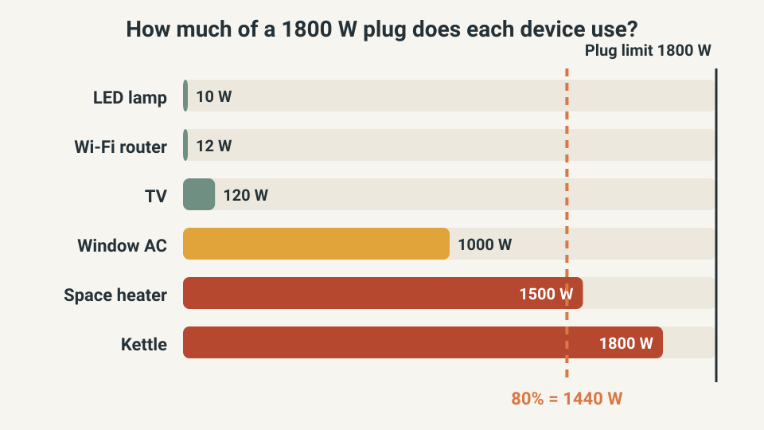
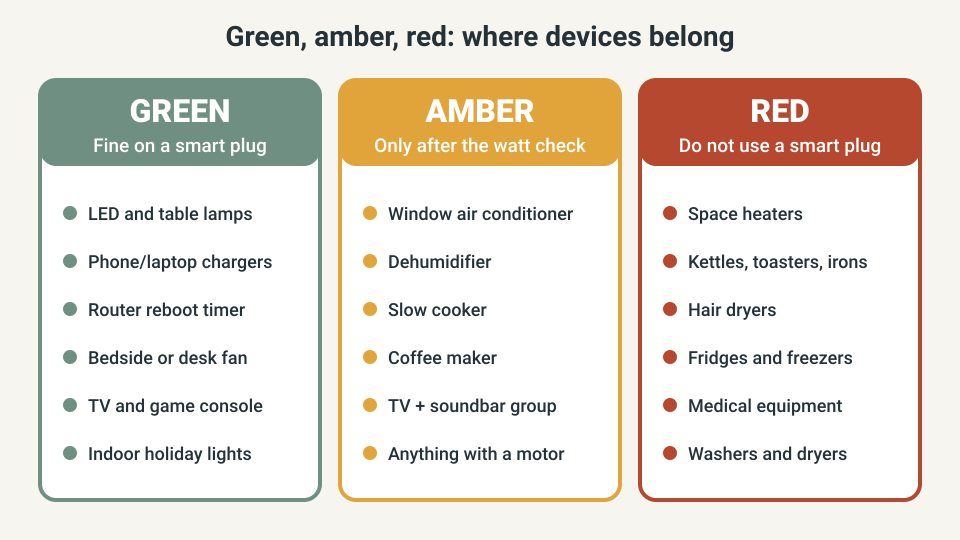
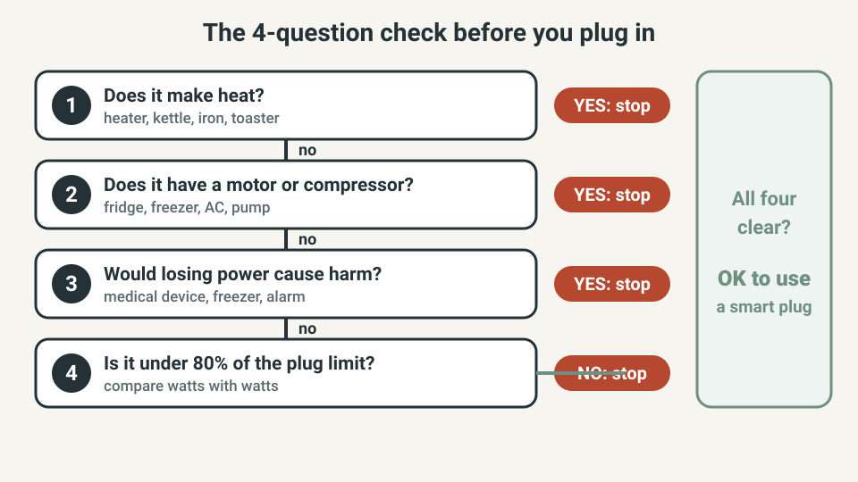

SMART HOME · SMART PLUGS & SAFETY
What Can You Safely Plug Into a Smart Plug? The Watt-Check Method

A smart plug is the cheapest way to add schedules and voice control to an ordinary lamp or fan. But the number printed on the plug is a limit, and the plug, not the appliance, becomes the weak point when you ignore it.
This guide gives you a simple watt check you can run in two minutes, plus a green, amber and red list so you know which devices belong on a smart plug and which do not.
The quick answer
- Low-power devices (lamps, chargers, routers, small fans) are the best fit.
- Anything that makes heat (space heaters, kettles, irons, toasters, hair dryers) should not go on a smart plug.
- Anything with a motor or compressor (fridges, freezers, air conditioners, pumps) needs extra care, and fridges and freezers are better left alone.
- Anything that must never lose power (medical equipment, alarms, a freezer full of food) should not depend on a plug that can switch off by accident.
- For everything else, keep the device's watts under about 80% of the plug's rating.
I am not an electrician. If you are unsure about a device, ask a qualified electrician or the manufacturer before you plug it in.
Quick plan
| Item | Detail |
|---|---|
| Time | About 15 minutes for your first device |
| Cost | Free if you already own a smart plug |
| Best for | Beginners, renters and anyone adding a first smart plug |
| Goal | Know which devices are safe before you plug them in |
Step 1: Read the numbers on both labels
Every smart plug has a rating printed on its body or its box, usually in amps and watts. A common US plug is rated 15 A and 1800 W. In the UK and Europe, many are rated 10 A or 13 A. Do not assume: read yours.

Next, read the appliance. Look on the back, the base or the plug for a label showing watts (W) or amps (A). If you only see amps, multiply by the voltage: volts x amps = watts.
Step 2: Use typical watts only as a rough guide
If you cannot find the label, the typical figures below give a rough idea. They vary a lot between models, so treat them as a guide and check the real label before you rely on them.
| Device (typical) | Typical watts | Notes |
|---|---|---|
| LED lamp | 5 to 15 W | Very low load |
| Phone or laptop charger | 5 to 65 W | Low load |
| Wi-Fi router | 6 to 20 W | Good for scheduled reboots |
| TV | 50 to 150 W | Fine; consider the soundbar and console too |
| Bedside or desk fan | 25 to 75 W | Has a motor but a small one |
| Window air conditioner | 500 to 1500 W | Motor and compressor; check the label |
| Space heater | up to 1500 W (US), often 2000 W or more (UK) | Heat plus long runtime |
| Kettle | 1500 to 1800 W (US), 2200 to 3000 W (UK) | Heat; do not use |
| Fridge or freezer | 100 to 200 W running, higher at start | Compressor; do not use |
Step 3: Compare the watts with a safety margin
The safe move is to stay below the plug's limit with room to spare, especially for devices that run for hours. A common rule of thumb is about 80% of the rating. On a 1800 W plug that is 1440 W. On a 2300 W plug it is 1840 W.

A space heater at 1500 W looks like it fits under 1800 W, but it is over the 80% line, it runs for hours, and it makes heat. A lamp at 10 W uses almost none of the budget. That is the difference between a good use and a risky one.
Green, amber and red: which devices belong on a smart plug
Use this list as a quick filter. Green devices are low risk, amber devices only pass after the watt check, and red devices should stay on a normal wall socket.

The 4-question check before you plug anything in
When you are standing in front of an outlet with a device in your hand, run these four questions in order. One yes on the first three means stop.

US, UK and EU: the numbers change
The voltage is different, so the watt limit is different even for the same amp rating.
| Region | Voltage | Common plug rating | Limit in watts |
|---|---|---|---|
| US and Canada | 120 V | 15 A | about 1800 W |
| UK | 230 V | 10 A or 13 A (check yours) | about 2300 W or 2990 W |
| Most of Europe | 230 V | 10 A or 16 A (check yours) | about 2300 W or 3680 W |
Check the certification mark too: UL or ETL in the US, UKCA or CE in the UK and Europe. A plug with no mark and no rating is not worth the risk. For outdoor use, buy a plug that is rated for outdoor use, not an indoor one in a box.
Five smart uses that really save effort
- Evening lamp: switch a lamp on at sunset so you never come home to a dark room.
- Router reboot: a weekly schedule that powers the router off for a minute and back on can clear small glitches.
- Standby cut: switch off the TV and console at night to avoid standby power.
- Bedside fan timer: let a small fan run for an hour and stop by itself.
- Away lighting: run a lamp on a schedule when you travel.
What not to buy yet
- A pack of ten plugs before you have tested one in your home.
- A plug rated below the device you plan to use. Rating comes first, features second.
- An unrated plug from an unknown seller. Look for the certification mark.
- A smart plug for a heater. Buy a heater with a built-in timer and tip-over protection instead.
Quick win (10 minutes)
- Pick one lamp and read its label. If it is an LED lamp, it should be a few watts.
- Read the rating on your smart plug and write it on a sticky note.
- Plug the lamp in, set an on and off time in the app, and watch it run for one evening.
- If you want more plugs, run the four questions for each device before you buy.
Common mistakes
- Looking at the plug's amps and the appliance's watts and comparing them directly.
- Ignoring that heaters and kettles draw close to the plug's maximum for a long time.
- Adding a power strip behind the smart plug without adding up the total watts.
- Putting a freezer or a medical device on a plug that a phone app can switch off.
- Buying plugs with no rating or certification mark.
Frequently asked questions
Can I plug a space heater into a smart plug?
Most heater manuals say to plug the heater straight into the wall, and heaters often draw close to the limit of a smart plug. The safe answer is no. If you want automation, look for a heater with its own thermostat and timer, and check its manual.
Can I use a smart plug with a fridge or freezer?
It is not recommended. A compressor draws extra power when it starts, and one accidental switch-off can spoil the food inside. Leave fridges and freezers on a normal wall socket.
Is it safe to leave a lamp on a smart plug all day?
An LED lamp draws only a few watts, far below the plug's limit, so it is one of the safest uses. Check that the plug has a certification mark and that it sits firmly in the socket.
Do smart plugs use electricity when they are off?
Yes, a small amount, because the plug keeps its Wi-Fi or radio chip awake. Many specifications list about a watt or less, so check the data sheet of yours.
Can I plug a power strip into a smart plug?
You can, but you must add up the watts of everything on the strip and run the same check on the total. If the strip carries anything from the red list, do not do it.
Keep going
- Test what still works when your Wi-Fi goes down
- Smart lighting without the headaches
- Motion lighting that actually helps
Sources and further reading
- T3, "5 appliances you should never use with a smart plug": https://www.t3.com/home-living/smart-home/5-appliances-you-should-never-use-with-a-smart-plug
- Tom's Guide, "Smart plugs are amazing but you should never connect these 3 devices to one": https://tomsguide.com/home/3-appliances-you-should-never-connect-to-a-smart-plug-experts-explain-why
- Vesternet, "What should you not plug into a smart plug?": https://www.vesternet.com/a/answers/5843485/What-should-you-not-plug-into-a-smart-plug
- TP-Link: what loads can be connected to a Tapo or Kasa smart plug